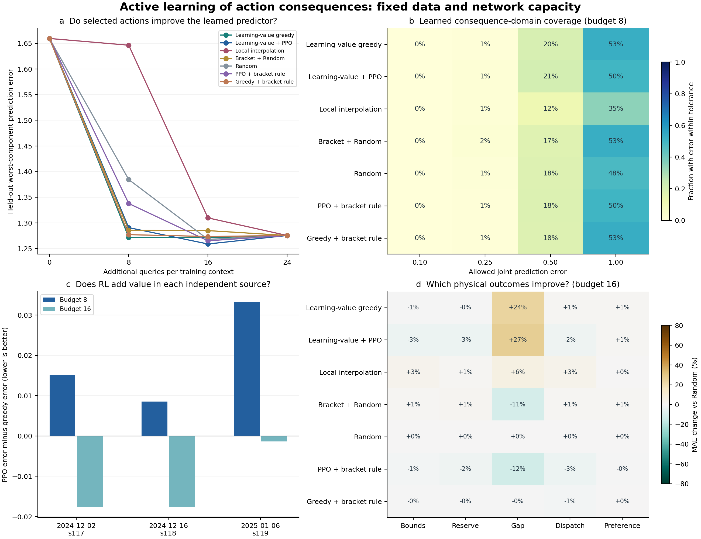

行动后果域主动学习：隔离验证与科研结论
本轮完成了从“覆盖画像”到“改善后果学习”的实质性改动。初始预测器只看共同初始分支，采集奖励直接来自固定训练奖励面上的预测误差下降；候选的预计学习价值直接进入选择评分，PPO学习受限的序贯修正。主要证据来自各方法选出的训练样本合并后，训练同容量网络，再在未参与训练和选择的source上评价，而非只看采集效用。
得到的结论是：学习价值选样产生了真实的样本质量收益；PPO学会了快速更新任务，但对最终网络训练只有小幅且依赖预算的增量；PPO与规则混合没有稳定超过单独PPO。 当前最应改善的是信息价值估计，以及快速奖励与最终训练用途的一致性。
数据与信息曝光
复用76个完整情境、2432条分支，未新增物理仿真。原train/meta_train的10个source作训练，原tune/meta_tune的4个source作调参；原cal的3个source（s117、s118、s119）作为本轮训练/选择隔离测试，原2个开发source作次要检查。三个测试source已有历史诊断，不称全新confirm，原未完成正式confirm仍未使用。
每个情境的3条共同初始分支可见，另有24条可查询动作和5条固定审计动作。审计分割只看动作族、强度和固定hash，不看后果。训练审计标签只提供采集奖励，不进入预测器拟合；调参审计标签只选模型和触发预先规定的混合；测试标签在全部模型和混合决定冻结后才用于评价。
初始预测器只用40个训练情境的120条初始分支训练。每情境额外8/16/24次查询后，最终训练数据分别为440/760/1080条。所有方法使用相同初始checkpoint、同一训练规程和相同容量。24次预算下样本集合完全相同，按指纹复用同一模型，所有方法的最终结果也完全一致。
主要结果：采到的动作确实改善了最终网络学习
下表为三个测试source等权、三个种子平均的任务误差，越低越好。任务误差是60维后果按固定训练初始尺度归一化的最大绝对误差与3个恢复失败分数误差的最大值；它不是风险发生概率或召回率。测试预测器没有接收测试source的查询答案，也没有在测试source上适应。
| 训练样本的采集方法 |
8次查询 |
16次查询 |
24次查询 |
| 学习价值贪心 |
1.27180 |
1.27113 |
1.27549 |
| 学习价值＋PPO |
1.29079 |
1.25894 |
1.27549 |
| 局部插值 |
1.64638 |
1.30982 |
1.27549 |
| 括区＋Random |
1.28553 |
1.28503 |
1.27549 |
| Random |
1.38460 |
1.26790 |
1.27549 |
| PPO＋括区规则 |
1.33785 |
1.26516 |
1.27549 |
| 贪心＋相同括区规则 |
1.27710 |
1.27354 |
1.27549 |
在8次预算下，学习价值贪心的任务误差比局部插值低22.75%，比Random低8.15%，比括区＋Random低1.07%。原归一化口径的平均后果MAE分别为0.02245、0.04192、0.02904和0.02299，因此相对局部插值的MAE降低46.44%，相对Random降低22.70%。同样数量的样本能够产生明显不同的下游学习效果，说明查询动作的价值不能仅按动作距离或后果画像细分判断。
改善主要来自未来可调区间和储能相关后果：预算8时，学习价值贪心相对局部插值的区间误差由0.01789降至0.01199，储能相对恢复工作量误差由0.15629降至0.07276。恢复缺口误差却由0.00169升至0.00186，表明收益不是每个任务都同向增加。联合误差容限为1时，学会的后果域比例由局部插值的34.81%提高至52.60%；这里的容限是预测误差容限，不是工程安全等级。
8次贪心查询的平均MAE已经接近全部24次查询（0.02245 vs 0.02194），但24次并非每个指标上最优。固定容量、固定训练规程下，更多标签不保证最大分量误差单调下降；本轮主要通过同预算方法之间的比较评价样本质量，不能将“初始模型与追加训练模型之差”全部归因于采集算法。
RL增量与规则混合
预算16时，PPO相对贪心的主要任务误差降低0.96%，三个测试source的差值均为负，分别为−0.01758、−0.01768、−0.00131；source配对bootstrap的误差差值区间为[−0.01768,−0.00131]。平均MAE由0.02246降至0.02190，行动增量MAE由0.02327降至0.02230，分别降低2.46%和4.14%。预算8时，PPO主要任务误差反而高1.49%。因此，RL有可观察的小幅增量，但尚不是稳定的小预算主优势；区间只有3个独立source的支持，不把数千预测单元作为独立重复。
混合在独立测试之前由调参结果触发：PPO选样后的调参误差只比贪心低约0.30%，没有达到预设的1%门槛。混合固定为奇数查询PPO、偶数查询已观察的括区；没有括区时Random，同时设置相同节奏、RNG和预算的贪心＋括区对照。
PPO混合在16次预算下优于贪心＋同规则约0.66%，但仍差于不混合的PPO；预算8时又差于贪心＋规则约4.76%。所以“加一条规则就能稳定改进RL”没有在本轮得到支持，不能把规则带来的任何收益自动归给RL。
快速学习奖励与最终网络学习必须分开
采集episode采用现有输出层的正则更新，真实计算更新前后的审计误差；最终用途则是把选中的训练样本合并后，全参数训练同容量网络。后者是本轮主结果。作为补充检验，冻结策略也在测试source上按相同预算更新临时读出，审计动作始终不被查询，临时读出不会写回主结果中的预测器。
| 新source上的快速读出误差 |
8次查询 |
16次查询 |
| 学习价值贪心 |
1.82980 |
1.80741 |
| 学习价值＋PPO |
1.73569 |
1.75552 |
| 局部插值 |
1.98755 |
1.91156 |
| 括区＋Random |
1.85274 |
1.81996 |
PPO在这个直接对应其奖励的任务上，相对贪心降低5.14%和2.87%的误差，说明它学会了改善快速学习任务，收益也迁移到了未参与训练的source。但快速读出的收益没有等比例转化为最终网络训练收益：8次预算下快速读出更好，最终网络却更差；16次预算下最终增量缩小到约1%。这提示应继续检查更新近似、合并选样和跨source泛化之间的关系，而不能把任一层的收益当作全部闭环已被证明。
信息价值接口起效，估计精度仍是瓶颈
冻结后的108个共同历史决策点中，删除信息价值通道会改变84.26%的首选动作，替换为真实单步收益会改变89.81%；删除候选后果通道改变8.33%，删除直接观测后果槽没有改变首选动作。新接口确实能够影响选择，同时也说明直接后果槽与间接价值通道不能混为一项机制贡献。
预计价值对实际单次误差收益的Spearman仅为0.00994，平均绝对估计误差0.08716。实际候选增益有44.79%为负，因此本轮保留负奖励是必要的。去掉预计价值通道，在这些诊断点上反而平均提高真实单步收益0.01315；换成oracle信息则提高0.02119。这些是冻结后的诊断，不是可部署结果，也没有用于更换本轮模型。
不增加数据、训练或仿真，仅把后果函数抽样从4个增加到16和64个，排序相关性变为0.04253和0.12236，估计MAE变为0.06433和0.05978。蒙特卡洛噪声确实解释了部分不足，但64个样本后相关性仍有限。该检查未重新选择动作或训练预测器，不能声称64个样本版本已改善主结果。
还验证了当前近似的结构特点：固定协方差与失败头，仅改变连续预测均值，预计价值最大变化约4.44×10⁻¹⁶。对于所用对称函数后验，这是中心均值抵消的结果；它表明评分主要依赖固定神经特征下的可缩减不确定性，对系统性连续预测偏差缺少直接响应。结合真实收益排序弱的结果，下一轮应重点校准“学到什么有用”，而非仅增加PPO轮数或网络容量。
可以支持的研究结论
第一，在相同数据量、相同网络容量和相同训练规程下，依据学习收益组织动作采集可以提高跨source后果学习，尤其在小预算下明显优于原局部插值采集。其证据是选样后网络的独立预测表现，而不是新的覆盖效用分数。
第二，将信息价值显式放进选择评分，确实改变了查询行为；PPO能够学习快速更新任务上的额外收益。其对最终预测器的增量依赖预算，当前宜作为机制与补充结果，不能主张RL全面优于规则或贪心。
第三，信息价值估计与实际学习器的匹配，是当前主要研究机会。更精确的函数抽样、利用已观测残差进行价值校准，以及用更贴近最终网络训练的短程更新估计收益，均比继续增加训练轮数更直接。下一轮应保持独立评价面，分别验证这几种解释，当前未自动启动后续训练。
本轮目标是60维资源、后续调度与偏好后果及3个未来恢复失败标签，不是原四类物理风险头。恢复失败真实正例共12/1152个时点标签单元，相关召回只作辅助证据。要把贡献进一步落到四类风险预警，必须用对应风险标签完成相同的下游学习验证。
工程验收和运行
后果网络136639参数，采集策略121794参数，均未扩容；统计协方差用于更新现有线性输出权重，不增加神经网络头。新增3次初始模型训练、3次PPO训练、45个不同选样集合的预测器训练。主流程约446秒，另有报告与冻结诊断；原物理环境、MPC、容量、阈值、旧RL与专家均未修改，新增仿真0。164项项目测试通过，原7个采集进程仍暂停。预算24的所有方法逐source、逐seed结果一致，样本集合与模型指纹已核验。
同RunId核验或恢复（已完成阶段不会重复训练）：
Set-Location -LiteralPath 'D:\博士资料包\科研\科研\AAAI_RL\tarp_37_information_acquisition'
powershell -ExecutionPolicy Bypass -File .\scripts\run_learning_value_v6.ps1 `
-RunId lv_reuse_s42_v1 -Mode reuse -Device cuda -Resume
若需重新运行同数据实验，使用新RunId；不要恢复原物理采集：
powershell -ExecutionPolicy Bypass -File .\scripts\run_learning_value_v6.ps1 `
-RunId lv_reuse_s42_v2 -Mode reuse -Device cuda
本轮原始产物位于 artifacts/learning_value_v6/lv_reuse_s42_v1/，含固定曝光协议、先验、策略、选择记录、选样指纹模型、冻结清单、独立评价、信息价值诊断与HTML报告。两个补充诊断脚本为 scripts/evaluate_local_learning_v6.py 与 scripts/probe_learning_value_v6.py，不训练新模型、不新增仿真。
行动后果主动学习复用验证
本轮复用现有封存数据，神经网络容量固定。训练/调参/独立测试/开发source数分别为10/4/3/2。初始模型只见每训练情境的3条共同分支；每情境另有24条可查询、5条固定奖励/审计分支。
独立测试为历史cal source，本轮未用于训练、奖励或模型选择。测试source上的所有32条动作均只作最终评价，测试时后果预测器不适应、不训练。该结果不冒充新仿真或全新confirm。
合并选样训练后的独立测试
| 方法 |
8次任务误差 |
16次任务误差 |
24次任务误差 |
| Learning-value greedy |
1.27180 |
1.27113 |
1.27549 |
| Learning-value + PPO |
1.29079 |
1.25894 |
1.27549 |
| Local interpolation |
1.64638 |
1.30982 |
1.27549 |
| Bracket + Random |
1.28553 |
1.28503 |
1.27549 |
| Random |
1.38460 |
1.26790 |
1.27549 |
| PPO + bracket rule |
1.33785 |
1.26516 |
1.27549 |
| Greedy + bracket rule |
1.27710 |
1.27354 |
1.27549 |
仅初始分支的任务误差：1.65947。
任务误差为60维连续后果按训练初始尺度归一化的最大绝对误差，以及3个恢复失败分数误差的最大值；失败分数不宣称已校准为真实概率。覆盖定义为上述联合误差不超过指定epsilon的动作比例。
所有方法选出的样本交给同一容量、同一训练规程的预测器；主要比较预算8/16。预算24时各方法样本集合完全一致，指纹核验并复用相同训练结果。
RL与规则混合
{'triggered': True, 'greedy_tune_error': 1.039605517266306, 'ppo_tune_error': 1.0364652178709077, 'rule': 'PPO on odd queries; verified bracket on even queries, Random if no bracket', 'criterion': 'PPO has not lowered tuning error by at least 1% over value greedy', 'test_labels_used': False}
混合由调参结果触发，比例与规则提前固定；独立测试不决定是否换比例或再训练。
能力与计算边界
60 physical resource/dispatch outcomes and 3 recovery labels; not four physical risk warning heads
{'prior_fits': 3, 'policy_fits': 3, 'student_fits': 45, 'prior_seconds': 4.690738399920519, 'policy_seconds': 196.52673249994405, 'student_seconds': 149.98029359977227, 'network_parameters': [136639], 'policy_parameters': [121794], 'policy_cache_queries': 46288, 'new_simulations': 0, 'old_rl_training': 0, 'old_expert_training': 0}
原物理环境、容量、阈值、旧RL与专家冻结；本轮物理仿真新增0。episode中通过现有输出层快速学习产生实际预测误差奖励；表中主结果则来自合并选样后全参数训练的模型，二者没有混为同一个指标。
执行命令
Set-Location -LiteralPath 'D:\博士资料包\科研\科研\AAAI_RL\tarp_37_information_acquisition'
powershell -ExecutionPolicy Bypass -File .\scripts\run_learning_value_v6.ps1 `
-RunId lv_reuse_s42_v1 -Mode reuse -Device cuda -Resume
信息价值与输入使用核验
{'spearman': {'mean': 0.009941490198927273, 'sources': {'2024-12-02_s117': -0.00999364352911263, '2024-12-16_s118': -0.03863890865270593, '2025-01-06_s119': 0.07845702277860038}, 'n_sources': 3}, 'marginal_mae': {'mean': 0.08716376622304228, 'sources': {'2024-12-02_s117': 0.08186087394799893, '2024-12-16_s118': 0.09386016169848262, '2025-01-06_s119': 0.08577026302264527}, 'n_sources': 3}, 'negative_actual_fraction': {'mean': 0.4478780864197531, 'sources': {'2024-12-02_s117': 0.3946759259259259, '2024-12-16_s118': 0.4806712962962963, '2025-01-06_s119': 0.46828703703703706}, 'n_sources': 3}, 'top1_regret': {'mean': 0.05665358207519932, 'sources': {'2024-12-02_s117': 0.058916425798251355, '2024-12-16_s118': 0.08384623498497325, '2025-01-06_s119': 0.027198085442373336}, 'n_sources': 3}}
信息评分、候选后果与已查后果通道分别扰动，避免把强制使用信息分数等同于原始后果通道敏感。oracle信息仅在冻结后作诊断。
{'oracle_information': {'choice_changed': {'mean': 0.898148148148148, 'sources': {'2024-12-02_s117': 0.8888888888888888, '2024-12-16_s118': 0.8888888888888888, '2025-01-06_s119': 0.9166666666666666}, 'n_sources': 3}, 'actual_gain_change': {'mean': 0.02119244842672584, 'sources': {'2024-12-02_s117': 0.018825152740122846, '2024-12-16_s118': 0.03272288967105691, '2025-01-06_s119': 0.01202930286899777}, 'n_sources': 3}}, 'without_candidate_outcomes': {'choice_changed': {'mean': 0.08333333333333333, 'sources': {'2024-12-02_s117': 0.1111111111111111, '2024-12-16_s118': 0.08333333333333333, '2025-01-06_s119': 0.05555555555555555}, 'n_sources': 3}, 'actual_gain_change': {'mean': -0.000543914137046758, 'sources': {'2024-12-02_s117': -0.0008945386977962285, '2024-12-16_s118': -0.000678724838137295, '2025-01-06_s119': -5.847887520675036e-05}, 'n_sources': 3}}, 'without_information': {'choice_changed': {'mean': 0.8425925925925926, 'sources': {'2024-12-02_s117': 0.8888888888888888, '2024-12-16_s118': 0.9166666666666666, '2025-01-06_s119': 0.7222222222222222}, 'n_sources': 3}, 'actual_gain_change': {'mean': 0.01314806816357863, 'sources': {'2024-12-02_s117': 0.014150741521368823, '2024-12-16_s118': 0.026154952897520622, '2025-01-06_s119': -0.0008614899281535533}, 'n_sources': 3}}, 'without_observed_outcomes': {'choice_changed': {'mean': 0.0, 'sources': {'2024-12-02_s117': 0.0, '2024-12-16_s118': 0.0, '2025-01-06_s119': 0.0}, 'n_sources': 3}, 'actual_gain_change': {'mean': 0.0, 'sources': {'2024-12-02_s117': 0.0, '2024-12-16_s118': 0.0, '2025-01-06_s119': 0.0}, 'n_sources': 3}}}
PPO最佳批次（0为未训练的价值贪心起点）：{'42': 100, '43': 100, '44': 40}
奖励面快速学习收益（训练面，区别于独立测试）
{'bracket_random': {'8': {'mean': -0.0579326318442462, 'sources': {'2024-03-04_s101': -0.042936530561633796, '2024-03-18_s109': 0.005903187954310042, '2024-04-22_s110': -0.286052412862183, '2024-05-13_s103': -0.15554190378886842, '2024-06-10_s104': -0.05942323550825959, '2024-06-24_s111': 0.007062473243007757, '2024-08-05_s105': 0.012556736401574472, '2024-09-16_s113': -0.02342884462930005, '2024-10-07_s106': -0.028684687195770314, '2024-10-21_s114': -0.008781101495339108}, 'n_sources': 10}, '16': {'mean': -0.0458670508823659, 'sources': {'2024-03-04_s101': -0.005295927697731989, '2024-03-18_s109': 0.01623989564426719, '2024-04-22_s110': -0.25291463385944496, '2024-05-13_s103': -0.19284400161836365, '2024-06-10_s104': -0.021211990381138756, '2024-06-24_s111': 0.008447741239020859, '2024-08-05_s105': 0.02240331979164493, '2024-09-16_s113': -0.015975512225516186, '2024-10-07_s106': -0.0062164671850092335, '2024-10-21_s114': -0.01130293253138718}, 'n_sources': 10}, '24': {'mean': -0.03621776412407247, 'sources': {'2024-03-04_s101': 0.006706815389360919, '2024-03-18_s109': 0.01590545349763242, '2024-04-22_s110': -0.2110964179167345, '2024-05-13_s103': -0.19255028197144872, '2024-06-10_s104': -0.015690560950601867, '2024-06-24_s111': 0.015883019367215645, '2024-08-05_s105': 0.025003595932808542, '2024-09-16_s113': -0.0020266663814308785, '2024-10-07_s106': -0.01518040830278497, '2024-10-21_s114': 0.010867810095258798}, 'n_sources': 10}}, 'greedy_bracket': {'8': {'mean': -0.05472477912570123, 'sources': {'2024-03-04_s101': -0.024956232682301283, '2024-03-18_s109': -0.020040993789511963, '2024-04-22_s110': -0.2957518938931866, '2024-05-13_s103': -0.11985537182255113, '2024-06-10_s104': -0.03585324354209458, '2024-06-24_s111': -0.0011371541868212172, '2024-08-05_s105': -0.004092044331422841, '2024-09-16_s113': -0.019089888096198614, '2024-10-07_s106': -0.019129180470436297, '2024-10-21_s114': -0.007341788442487646}, 'n_sources': 10}, '16': {'mean': -0.03350653167442439, 'sources': {'2024-03-04_s101': -0.010701343363049084, '2024-03-18_s109': 0.00474830234212457, '2024-04-22_s110': -0.12635019242493448, '2024-05-13_s103': -0.18815887204967963, '2024-06-10_s104': -0.026552622897422874, '2024-06-24_s111': 0.018018772903414294, '2024-08-05_s105': 0.01500120890129473, '2024-09-16_s113': -0.0003471939954089916, '2024-10-07_s106': -0.015273564321032829, '2024-10-21_s114': -0.005449811839549586}, 'n_sources': 10}, '24': {'mean': -0.036217764124072474, 'sources': {'2024-03-04_s101': 0.006706815389360919, '2024-03-18_s109': 0.01590545349763245, '2024-04-22_s110': -0.21109641791673447, '2024-05-13_s103': -0.19255028197144874, '2024-06-10_s104': -0.01569056095060194, '2024-06-24_s111': 0.015883019367215628, '2024-08-05_s105': 0.02500359593280857, '2024-09-16_s113': -0.0020266663814309436, '2024-10-07_s106': -0.015180408302784979, '2024-10-21_s114': 0.010867810095258798}, 'n_sources': 10}}, 'hybrid': {'8': {'mean': -0.01605834684816082, 'sources': {'2024-03-04_s101': 0.005520368115358563, '2024-03-18_s109': 0.013550524987492207, '2024-04-22_s110': -0.20744079269921875, '2024-05-13_s103': -0.05881503020790285, '2024-06-10_s104': 0.007537254505247476, '2024-06-24_s111': 0.012177485117154968, '2024-08-05_s105': 0.02855174040236901, '2024-09-16_s113': -0.0028121066537736086, '2024-10-07_s106': 0.02028354216570451, '2024-10-21_s114': 0.020863545785960242}, 'n_sources': 10}, '16': {'mean': -0.015415325219749162, 'sources': {'2024-03-04_s101': 0.008347928130397883, '2024-03-18_s109': 0.011265778585796119, '2024-04-22_s110': -0.145654631727778, '2024-05-13_s103': -0.11626779586991469, '2024-06-10_s104': 0.005582164969563125, '2024-06-24_s111': 0.01918559079452171, '2024-08-05_s105': 0.03290250359151134, '2024-09-16_s113': 0.00490768941763467, '2024-10-07_s106': 0.007125709980426914, '2024-10-21_s114': 0.018451809930349294}, 'n_sources': 10}, '24': {'mean': -0.03621776412407247, 'sources': {'2024-03-04_s101': 0.006706815389360882, '2024-03-18_s109': 0.015905453497632477, '2024-04-22_s110': -0.21109641791673442, '2024-05-13_s103': -0.19255028197144872, '2024-06-10_s104': -0.015690560950601923, '2024-06-24_s111': 0.015883019367215635, '2024-08-05_s105': 0.025003595932808532, '2024-09-16_s113': -0.002026666381430888, '2024-10-07_s106': -0.01518040830278499, '2024-10-21_s114': 0.010867810095258798}, 'n_sources': 10}}, 'local': {'8': {'mean': -0.15105862482882143, 'sources': {'2024-03-04_s101': -0.05424236669579644, '2024-03-18_s109': -0.0027568740621906804, '2024-04-22_s110': -0.642117512272851, '2024-05-13_s103': -0.3842589513659019, '2024-06-10_s104': -0.10149168149194537, '2024-06-24_s111': -0.03858116582337886, '2024-08-05_s105': -0.0316373729951758, '2024-09-16_s113': -0.1043582242840193, '2024-10-07_s106': -0.04175780233048163, '2024-10-21_s114': -0.10938429696647356}, 'n_sources': 10}, '16': {'mean': -0.12398075240374054, 'sources': {'2024-03-04_s101': -0.04454740528381653, '2024-03-18_s109': -0.0145424938892293, '2024-04-22_s110': -0.5390424210060799, '2024-05-13_s103': -0.3300598283260061, '2024-06-10_s104': -0.06875984509872651, '2024-06-24_s111': -0.03425564754883429, '2024-08-05_s105': -0.008176075930669898, '2024-09-16_s113': -0.07133493949951175, '2024-10-07_s106': -0.06797928386761436, '2024-10-21_s114': -0.06110958358691667}, 'n_sources': 10}, '24': {'mean': -0.03621776412407246, 'sources': {'2024-03-04_s101': 0.006706815389360919, '2024-03-18_s109': 0.01590545349763244, '2024-04-22_s110': -0.21109641791673442, '2024-05-13_s103': -0.19255028197144872, '2024-06-10_s104': -0.01569056095060194, '2024-06-24_s111': 0.015883019367215662, '2024-08-05_s105': 0.025003595932808542, '2024-09-16_s113': -0.0020266663814309063, '2024-10-07_s106': -0.01518040830278497, '2024-10-21_s114': 0.010867810095258806}, 'n_sources': 10}}, 'random': {'8': {'mean': -0.040320131233746274, 'sources': {'2024-03-04_s101': -0.022778297927715806, '2024-03-18_s109': 0.007875691690617201, '2024-04-22_s110': -0.18995243529464853, '2024-05-13_s103': -0.15554777038036904, '2024-06-10_s104': -0.027314266312018165, '2024-06-24_s111': 0.010204473205099854, '2024-08-05_s105': 0.018950713060726338, '2024-09-16_s113': -0.01468069031360559, '2024-10-07_s106': -0.030222754778710715, '2024-10-21_s114': 0.00026402471316171644}, 'n_sources': 10}, '16': {'mean': -0.03679490197979795, 'sources': {'2024-03-04_s101': -0.0036313604848387158, '2024-03-18_s109': 0.01708283142386931, '2024-04-22_s110': -0.1814500957019888, '2024-05-13_s103': -0.19656578300951377, '2024-06-10_s104': -0.018449917754969597, '2024-06-24_s111': 0.008889455309805413, '2024-08-05_s105': 0.02819617564004025, '2024-09-16_s113': -0.017883962549848642, '2024-10-07_s106': -0.00017955049884075627, '2024-10-21_s114': -0.003956812171694181}, 'n_sources': 10}, '24': {'mean': -0.03621776412407245, 'sources': {'2024-03-04_s101': 0.0067068153893609, '2024-03-18_s109': 0.015905453497632432, '2024-04-22_s110': -0.21109641791673442, '2024-05-13_s103': -0.19255028197144877, '2024-06-10_s104': -0.015690560950601923, '2024-06-24_s111': 0.015883019367215673, '2024-08-05_s105': 0.025003595932808542, '2024-09-16_s113': -0.0020266663814308603, '2024-10-07_s106': -0.015180408302784961, '2024-10-21_s114': 0.010867810095258798}, 'n_sources': 10}}, 'value_greedy': {'8': {'mean': -0.05327653391706201, 'sources': {'2024-03-04_s101': 0.002023946695662915, '2024-03-18_s109': 0.002676766808666381, '2024-04-22_s110': -0.3195457363864493, '2024-05-13_s103': -0.2025515134359046, '2024-06-10_s104': -0.021929137720622088, '2024-06-24_s111': 0.008503885157502463, '2024-08-05_s105': 0.00833694098647228, '2024-09-16_s113': -0.014011232138706411, '2024-10-07_s106': -0.015513033122648531, '2024-10-21_s114': 0.019243773985406793}, 'n_sources': 10}, '16': {'mean': -0.035911059102384, 'sources': {'2024-03-04_s101': 0.010427135108302963, '2024-03-18_s109': 0.0028675281330872715, '2024-04-22_s110': -0.2063138694555244, '2024-05-13_s103': -0.17058482045499054, '2024-06-10_s104': -0.020521792262224798, '2024-06-24_s111': 0.012303438300555627, '2024-08-05_s105': 0.015026830773816382, '2024-09-16_s113': -0.005070681028326474, '2024-10-07_s106': -0.017119914832351424, '2024-10-21_s114': 0.019875554693815384}, 'n_sources': 10}, '24': {'mean': -0.03621776412407246, 'sources': {'2024-03-04_s101': 0.006706815389360882, '2024-03-18_s109': 0.01590545349763244, '2024-04-22_s110': -0.21109641791673442, '2024-05-13_s103': -0.19255028197144872, '2024-06-10_s104': -0.01569056095060194, '2024-06-24_s111': 0.015883019367215683, '2024-08-05_s105': 0.025003595932808514, '2024-09-16_s113': -0.002026666381430897, '2024-10-07_s106': -0.015180408302784942, '2024-10-21_s114': 0.010867810095258806}, 'n_sources': 10}}, 'value_ppo': {'8': {'mean': 0.021023267953945653, 'sources': {'2024-03-04_s101': 0.017967439919832146, '2024-03-18_s109': 0.03686641558958908, '2024-04-22_s110': 0.01878401431815842, '2024-05-13_s103': 0.01854726440574291, '2024-06-10_s104': 0.009854272564963166, '2024-06-24_s111': 0.014787638228003072, '2024-08-05_s105': 0.029819726628296267, '2024-09-16_s113': 0.012137766068198367, '2024-10-07_s106': 0.010320316943978511, '2024-10-21_s114': 0.04114782487269462}, 'n_sources': 10}, '16': {'mean': 0.010961811405326238, 'sources': {'2024-03-04_s101': 0.019799378507330795, '2024-03-18_s109': 0.03644336994587644, '2024-04-22_s110': -0.033063545267457826, '2024-05-13_s103': -0.03758956152098638, '2024-06-10_s104': 0.014069228863120916, '2024-06-24_s111': 0.022898961868592898, '2024-08-05_s105': 0.03242773634020734, '2024-09-16_s113': 0.01406088428049812, '2024-10-07_s106': 0.0146921973086608, '2024-10-21_s114': 0.025879463727419266}, 'n_sources': 10}, '24': {'mean': -0.036217764124072474, 'sources': {'2024-03-04_s101': 0.006706815389360937, '2024-03-18_s109': 0.01590545349763242, '2024-04-22_s110': -0.2110964179167345, '2024-05-13_s103': -0.19255028197144872, '2024-06-10_s104': -0.015690560950601923, '2024-06-24_s111': 0.015883019367215662, '2024-08-05_s105': 0.025003595932808542, '2024-09-16_s113': -0.002026666381430888, '2024-10-07_s106': -0.01518040830278499, '2024-10-21_s114': 0.010867810095258787}, 'n_sources': 10}}}
学习收益、覆盖与物理后果组合图
